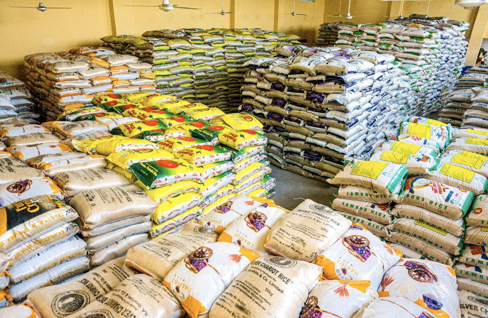
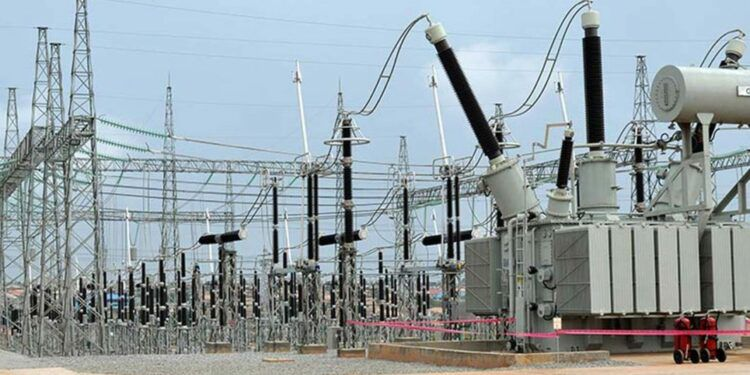
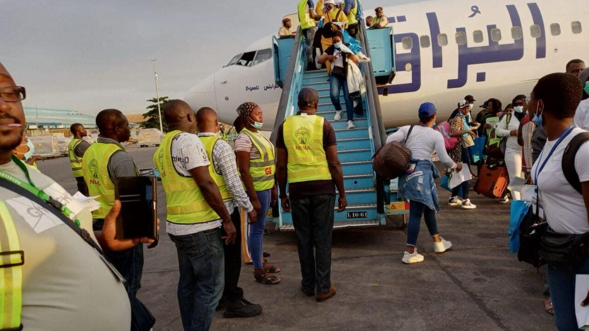

NEWS

GOVERNMENT
LAGS to demolish $200 million landmark beach resort for costal highway project.
The lagos state government is set to demolish a portion of the popular landmark beach resort to give way for the coastal highway construction of the lagos-calabar road project. Landmark Beach Resort’s management has initiated negotiations with federal and state governments and interest groups to adjust the initial 1.5 km segment of the Lagos-Calabar Coastal Highway, proposing to redirect it along the undeveloped median of Water Corporation Road to avoid disrupting the resort’s business. Paul Onwuanibe, CEO of Landmark Africa Group, made this announcement on his official X (formerly Twitter) account on Saturday in response to a demolition notice from the Lagos State Government, which targeted the resort for being in the planned right of way of the highway, negotiations are underway to reroute the initial segment of the Lagos-Calabar Coastal Highway and protect the resort’s location. “I wish to confirm that we are in active talks with various arms of the federal and state government including the Lagos State Government, the Federal and State Ministries of Tourism, and the Federal Ministry of Works and Housing as well as several interest groups and have received firm assurances that there will be no disruptions to business while we work to agree win-win solutions including rerouting the first 1.5 km out of the 700km stretch of the Road to its original location along the undeveloped Water Corporation Road median. “We believe that with careful collaboration and consultation, a small number of other minor reroutes may be required to sustain the existing socioeconomic activity along the course of this Road,” Onwuanibe’s post read in part.” The CEO of Landmark Africa Group commended the Lagos-Calabar Coastal Highway project for its potential to boost the economy and expressed optimism about the ongoing consultations. Onwuanibe believes that these discussions will find ways to develop the road while preserving the Landmark Group’s ecosystem. According to him, this ecosystem not only contributes billions of Naira in annual taxes and employs thousands of Nigerians but also provides a range of corporate, leisure, hospitality, and tourism services to over 3 million local and international visitors each year.

DOLLAR
Black market dollar (USD) to naira (NGN) exchange rate today.
The exchange rate for a dollar to naira at lagos Parallel Market(Black market) players buy a dollar for ₦ 1245 and sell at ₦ 1250, according to sources at Bureau De Change(BDC) The Nigerian currency has continued its pushback against the US dollar and other major currencies, The development follows a demand by black market operators that the CBN should reduce the buying rate of the dollar it sells to them.

FOOD CRISIS
FG to distribute 4200MT of food to vulnerable Nigerians.
Nigeria's federal government has flagged off of the release of 42,000 metric tonnes (MT) of assorted food commodities from the National Strategic Food Reserve (NSFR) across the country to vulnerable Nigerians to take cushion the effect of the rising cost of food commodities.

ELETRICITY HIKE
Labour threatens showdown as FG insists on eletricity tariff hike.
The Minister of Power, Adebayo Adelabu, said the Federal Government is still paying subsidy on electricity despite the recent hike in tariff paid by Band A customers. Adelabu stated this in an interview on Channels Television’s Politics.Adelabu said the tariff hike only affects 1.5 million customers — out of 12 million. The tariff is flexible and I can tell you that even if naira gains more and the exchange rate comes down below N1,000, it must positively affect the tariff.

MIGRANTS
FG evacuates 138 Nigerian irregular migrants stranded in Libya.
The Federal Government has evacuated no fewer than 138 Nigerian irregular migrants stranded in Libya. Among the evacuees today are 77 males, 56 females, 11 children, and four infants. They departed aboard chartered flight UZ 189 from the Tripoli International Airport and would arrive at the Murtala Mohammed Airport in Lagos. the evacuation exercises were carried out in collaboration with the International Organisation for Migration (IOM) in Libya under its consistent Voluntary Humanitarian Repatriation (VHR) programme.

LONDON TO LAGOS
Sanwo-Olu appoints London-to-Lagos solo driver, Pelumi Nubi, tourism ambassador.
Lagos State Governor, Mr. Babajide Sanwo-Olu, has named a United Kingdom-based Nigerian solo driver on a road trip from London to Lagos, Ms. Pelumi Nubi, as Lagos Tourism Ambassador. Sanwo-Olu, also presented a house and a branded LAGRIDE vehicle with the customised number plate NUBI 9JA to the 28-year-old adventurer. According to a statement on Monday, the Governor assured the travel content creator that the Lagos State Government would write off the entire bill for her solo drive from London to Lagos.

RIVERS STATE
Rivers: Gov Fubara hands Mary Odili, others new appointments.
Governor Siminalayi Fubara of Rivers State has appointed Justice Mary Odili (JSC) (rtd) as the Pro-Chancellor and Chairman of the Rivers State University. Those Fubara also include Chief Adokiye Amiesimaka to serve as the Pro-Chancellor and Chairman; Ignatius Ajuru University of Education and Captain Elechi Amadi Polytechnic, with Dr Robinson Ewoh as Chairman. He inaugurated the Governing Councils of three tertiary education institutions in the State.